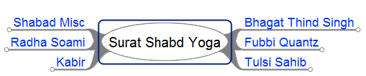

Lineages
The History of Man's Excursions into
Inner Light and Sound

- Latest and greatest version!
Check it out!
It was done by exporting the Freeplane mindmap to
OPML. And then I used the excellent
Leo Editor
's OPML-to-Leo plugin to convert from OPML to Leo.
And then I used
the excellent
LeoVue package
to visualize it! In other
words it was Freeplane to OPML to LEO to LeoVue!!!
-
HTML version (expanded)
-
HTML version (collapsible).
.
-
Javascript version
-
Image map version.
Notes
-
These maps are done using the excellent
Freeplane
mind-mapping software. You are welcome to obtain
the source
and create your own version. Or submit corrections
to me (there
has been some mention of inaccuracies).
-
Notes from the mindmap will now link to
the wiki.
-
There has been a request for dates to be listed. I have
started adding that in the notes section of the gurus.
-
There are many ancient masters of this path not listed. The
primary focus of this lineage chart is to help those actively
seeking a guru/system/path. A number of the ancient masters
were acknowledged by Pravesh K. Singh
in a
post of his.
- The original of this mindmap was done by Erika Molnar, who ran the
santmat-meditation.net website. Her website is no longer
on the internet, but you can find her
in the
Wayback Machine. Click
on Gurus
Chart to see her version.
The realms of
Soul Travel. The vibratory
streams of God depicted in planes based on increasing
density as they emanate from Source.
Light and
Sounds Links-A-Go-Go Various
Sant Mat hangouts on the internet for your physical plane
playing.
- If there were one site to recommend, it would be INNER SONIC KEY.
-
Actually,
a
Reddit search for Sant Mat
is not a bad starting point either.
- W.C. Vetsch is a
superman when it comes to melding Eastern and Western
viewpoints on Sant Mat and related fields such as
conspiracy theory, hard logic, high magick, math,
gnosticism and fringe science. His Essentials of Mysticism
is a master work. He's the only person whose grasp of the
inner and outer is strong enough to remind me of
Maximilian Sandor (aka Joachim Steingrubner).
- Spiritual
Freedom Satsang is where I get my email on. Here you
will find Michael Turner, the hippest hippie Sant Mat
guru on Planet Earth. Who else is pro-marijuana and
meat-eating in the Sant Mat community? Dont blood-test
me (grin).
Sant
Santati is also an excellent group with very uptone
participants. And of
course Radhasoami
Studies is great because it is unmoderated
free-for-all action!
- Sound Current
Rider is a site crafted with vision. This site was
made from a mental blueprint. Not randomly thrown
together. The only problem is, it's such a nice site,
you want to quit looking at it and return to the inner
(grin).
- When searching for Sant Mat and related items, be sure
to use Duck Duck
Go, a very nice search engine.
Bibliographic
Material
Yes, I know all knowledge other than
I AM is relative. However, I had use some relative
knowledge to put this site together and here are some of
the better resources
- Novelguide has an
excellent summary
of Light and Sound systems.. for some reason they left out
Sony and Bose... hmmmm...
-
Andrea Grace Diem
graciously overviewed
the Western systems.
- And
again, Kheper
has a wealth of associative information for those still
interested in populating their Akashic memory banks with
more relative knowledge on Reality (not Truth, mind
you).
- The ex-premie
page on sant mat lineages has some excellent
data
Author
and acknowledgements and pictures and
blog and, and, and ...
{kind=link}
{kind=link}